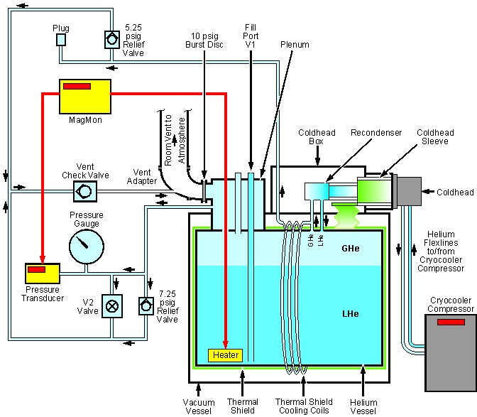
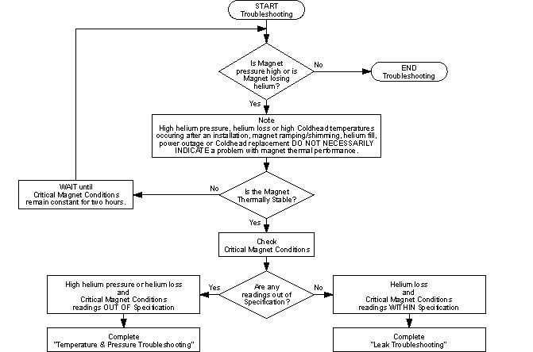
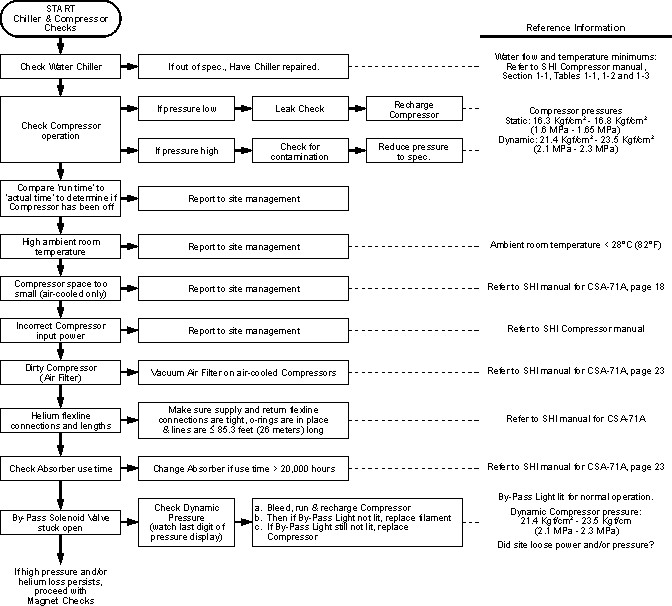
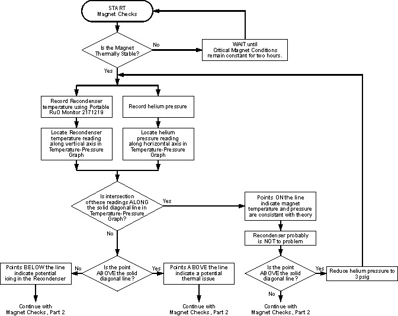
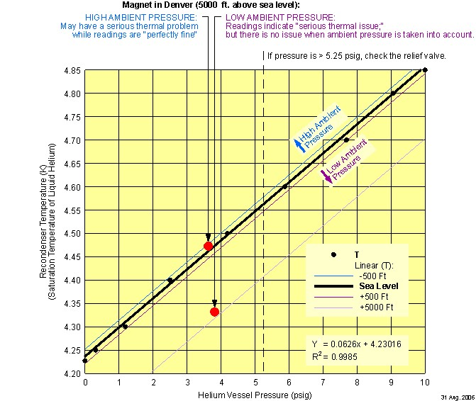
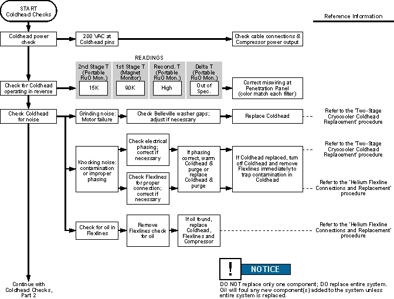
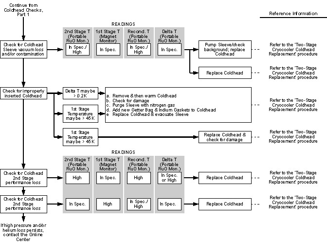
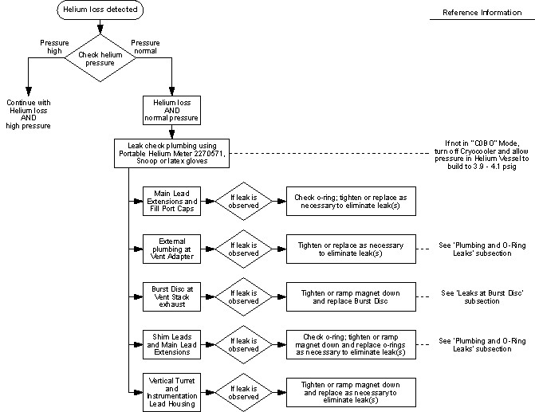
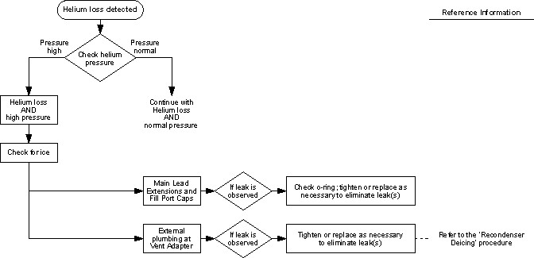
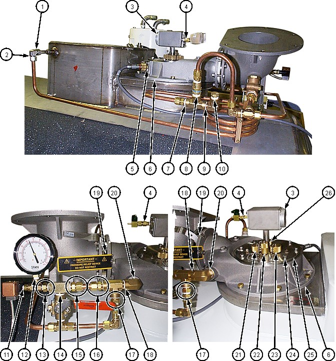

Operating Documentation
Direction 5670000, Rev# 1
Optima MR450w 1.5T Service Methods
Module Version 4.0, Version Date 2/4/10
Operating Documentation |
Helium loss on a Zero Boil-Off magnet should be insignificant (not measurable) over a period of weeks or months. If significant helium loss is suspected, the following is required to define and quantify the suspected loss:
The magnet must be in a normal operating mode and have stabilized after a ramp or fill.
Two sets of data must be taken over time (2 days to 2 weeks, depending on size of leak), with known and calibrated instrumentation and at the same vessel pressure, to establish extent of the problem.
If high pressure or helium loss is established, use the Troubleshooting Guide in this section to determine the root cause(s) of the problem and to resolve the issue(s).
| Item | Part Number | Spare Part |
|---|---|---|
| Portable Liquid Helium Level Meter | 2270571 | Yes |
| Leybold Leak Detector | ― | ― |
| Portable RuO Temperature Monitor (included in RuO Temperature Monitor Kit 2183710) | 2171219 | Yes |
| Portable Handheld Magnet Temperature Meter MTM-101 | 5119507 | No |
| Plexiglas Heat Exchanger Cover Plate | 2174214 | Yes |
| Helium Gas Tubing | ― | ― |
| Coldhead Maintenance Kit | 46-281088G3 | Yes |
| Field Vacuum Pump Kit | 46-294047G1 | Yes |
| Magnet Monitor Pin Tester | 2356202 | Yes |
| M10 Allen Wrench | 46-320470P10 | Yes |
| Plus those items required by the procedure(s) needed to fix the problem. | ||
| Item | Part Number | Spare Part |
|---|---|---|
| Leak Detector Fluid, such as Bird Dog Quart Spray (P/N DOG-1Q), Big Blue (P/N Rt100S or Rt100G) or Snoop | ― | ― |
| Small Balloon | ― | ― |
| Small Sponge | ― | ― |
| Plus those items required by the procedure(s) needed to fix the problem. | ||
| Item | Part Number | Spare Part |
|---|---|---|
| O-Rings (included in Field Spare Parts Kit) | 5265652 | ― |
| Transition Flange O-Ring | 46-281247P1 | Yes |
| Plus those items required by the procedure(s) needed to fix the problem. | ||
No general safety information.
| Condition | Reference |
| Removal of some magnet enclosure components may be required to complete the Temperature, Pressure and Leak Troubleshooting. Refer to this document and the appropriate Service Methods documentation (available through the Common Documentation Library at gehealthcare.com or your local GE Healthcare Service Representative) before continuing. | Enclosure Removal and Install |
The illustration below shows a thermal system schematic of an installed magnet, including the path of liquid helium (LHe) and gaseous helium (GHe) through the helium vessel and plumbing.
Illustration 1: Magnet Thermal System Schematic

| ||||
| Follow the temperature and pressure troubleshooting procedures in sequence to minimize unnecessary Coldhead removal/replacement. Repair all problems when discovered, then proceed with additional troubleshooting as required. | ||||
Illustration 2: Initial Troubleshooting

Table 1: Critical Magnet Conditions
| Condition | Measure Used | Specification |
|---|---|---|
| Second Stage Coldhead Temp (RuO A) | MTM-101 or 2171219 | <4.4K |
| First Stage Coldhead Temp (SI410 D1) | MTM-101 or 2171219 | <45K |
| Recondenser Temp (RuO B) | MTM-101 or 2171219 | >4.2K, but <4.5K |
| ΔT = = RuO B - RuO A | MTM-101 or 2171219 | >0.0K, but <0.2K |
| Magnet Helium Pressure | Magnet Monitor | 4.0 psig ±0.2 psig |
| ||||
| Second-stage coldhead (RuO A) and Recondenser (RuO B) readings MUST be taken using a handheld RuO meter, either the MTM-101 (5119507) or Portable RuO Temp Monitor (2171219) connected directly to the RuO outputs on the Coldhead and Sleeve. | ||||
| NOTE: | Either temperature meter may show small oscillations while
reading the second-stage coldhead resulting from Displacer motion
inside the coldhead sleeve and the monitor’s sampling rate.
Record the average temperature reading: (Tmin + Tmax) / 2. |
Illustration 3: High Pressure/Temperature Troubleshooting Flowchart: Site Problems and Chiller/Compressor Checks

| Manual | Vendor Part Number | GE Part Number |
|---|---|---|
| SHI SRDK Cryocooler Service Manual | CD32ZZ-055D | 2262271 |
| CSA-71A Compressor Unit Manual | CD32ZZ-060H | Included in 2262271 |
Use the flowchart in Illustration 4 in conjunction with the temperature-pressure graph in Illustration 5 to determine if vapor pressure is consistent with RuO readings.
Illustration 4: High Pressure/Temperature Troubleshooting Flowchart: Magnet and Coldhead Interface Checks (Part 1)

Illustration 5: Temperature/Pressure Graph: Liquid Helium (LHe) Saturation Temperature (Approximate Recondenser Temperature vs. Helium Vessel Pressure)

| ||||
| Potential Cold Burn or Asphyxiation Hazard! | ||||
| Internal cryostat pressure build-up to >5.25 psig will open the 5.25 psig relief valve. | ||||
Before removing either Ramp or Fill Port Caps or loosening
any component resulting in the release of cryogen pressure:
|
| NOTE: | If the site has Magnet Monitor proprietary software, connect to the Magnet Monitor and turn off the alarm for vessel pressure. Turn the vessel pressure control to a high value of 0.5 psig and a low value of 0.4 psig. |
Illustration 6: High Pressure/Temperature Troubleshooting Flowchart: Magnet and Coldhead Interface Checks (Part 2)

| Procedures Referenced |
|---|
| Shim Lead Engagement and Disengagement |
| Two-Stage Cryocooler Coldhead Replacement |
| Ice Removal, Shim Lead Connector and Vertical Penetration Deicing subsection |
| Ice Removal, Recondenser Deicing subsection |
Illustration 7: High Pressure/Temperature Troubleshooting Flowchart: Magnet and Coldhead Interface Checks (Part 3)

| Procedure Referenced |
|---|
| Re-Evacuation of Cryostat |
Only perform Coldhead Checks after completion of Chiller and Compressor Checks.
Illustration 8: High Pressure/Temperature Troubleshooting Flowchart: Coldhead Checks (Part 1)

| Procedures Referenced |
|---|
| Two-Stage Cryocooler Coldhead Replacement |
| Helium Flexline Connections and Replacement |
Illustration 9: High Pressure/Temperature Troubleshooting Flowchart: Coldhead Checks (Part 2)

| Procedures Referenced |
|---|
| Two-Stage Cryocooler Coldhead Replacement |
Operation of the magnet in the Controlled Zero Boil-Off (C0BO) mode with internal helium pressure >4.1 psig increases the potential of helium leaks. A number of small helium leaks will have a significant effect on boil-off and result in the measurable loss of helium over time.
Ice or condensation on plenum plumbing indicates a leak in the helium plumbing.
Major helium leaks will depressurize the helium vessel and can result in cryo-pumping and icing inside the vessel.
| NOTE: | Observe Magnet Monitor helium level data over a month or more. A slow helium level decrease is evidence of leaking helium. |
| ||||
| Potential Asphyxiation Hazard! | ||||
| Odorless, colorless helium gas is released during leak troubleshooting. Helium gas will displace oxygen. | ||||
| Make sure the magnet room vent exhaust fan is turned on before starting leak troubleshooting. |
| ||||
| Potential cold Burn Hazard! | ||||
| skin contact with a cold vent system can cause cold burns. | ||||
| Wear protective clothing, nonabsorbent gloves and goggles when replacing the Burst Disc on a cold vent system. |
| ||||
| Review and follow the safety measures contained in 2301164PRE MR Magnet Safety Requirements. | ||||
Illustration 10: Leak Troubleshooting Flowchart, Helium Loss and Normal Pressure

| Subsections of Temperature, Pressure and Leak Troubleshooting Referenced |
|---|
| Plumbing and O-Ring Leaks, Section 3.2.4 |
| Leaks at Burst Disc, Section 3.2.5 |
Illustration 11: Leak Troubleshooting Flowchart, Helium Loss and High Pressure

| Procedures Referenced |
|---|
| Ice Removal, Recondenser Deicing subsection |
Illustration 12: 25 Places to Check for Leaks - Magnets with Plumbing Assembly 2281696-2

| NOTE: | Locations 13 through 16 in Illustration 12 are not in Plumbing Assembly 5175534. |
Check Magnet Monitor operation if pressure is <3.9 psig. Helium pressure <3.9 psig indicates a leak.
Commercial leak detector fluids or instruments available in the HVAC industry can be used to determine small leaks in the helium plumbing and venting. Some examples available through HVAC distributors are:
Bird Dog Quart Spray (P/N DOG-1Q)
Big Blue (P/N Rt100S or Rt100G)
Snoop
Portable Leak Detector
When the pressure is <3.9 psig, check the following areas for leaks with a leak detector fluid or instrument:
| NOTE: | If using leak detector fluid, make sure to keep each location being checked completely covered (for instance, using a sponge) to allow sufficient time to identify slow leaks. |
All External Plumbing Joints
Vertical Turret, Instrumentation Lead Cover and Feed-Through Pins
Main Lead and Fill Port Caps
Shim Lead Collar/Cap
Pressure Gauge
Shim Lead Pins
Repair any leaks found, then test the repairs.
Replacement O-rings and a Burst Disc are included in Field Spares Kit 5265652.
Remove the outlet plumbing (Vent Adapter side) for the 5.25 psig relief valve and the 7.25 psig bypass valve.
Remove the cap from the Nupro valve at the top of the Shim Lead.
| NOTE: | Suitable alternative leak checking equipment can be used in the following steps. |
Attach a small balloon tightly to the exhaust side of the 5.25 psig relief valve, 7.25 psig bypass valve, and the Nupro valve.
Observe any expansion of the balloon from leaking helium gas.
Replace any valve that has suspected leaks, and retest the new valve for leaks. (Valve part numbers are listed in LCC300 Magnet Assembly.)
| ||||
| Small (micro) bubbles may appear between the gasket and flange, which is normal for this gasket material. Make sure the Belleville washers are flattened and that no major leaks (continuous bubbles over 0.08 in. or 2 mm in diameter) are present. Foam-like bubbles may be present. | ||||
Ramp the magnet down to zero field in conformance with Magnet Rampdown to Zero Field.
Remove the Vent Adapter.
Check the Burst Disc for cracks or significant leaks around the gasket. Replace any cracked or leaking Burst Disc in conformance with Burst Disc Replacement.
When the furthest right digit on the Magnet Monitor pressure gauge decreases by a few units over 1 to 2 hours, there is a 90% probability that high pressure/helium loss issue(s) resolved. Magnet pressure usually returns to and stabilizes at ~4 psig in less than one week.
If the root cause of an issue is not found after completing Troubleshooting Guide, Section 3.1 and Leak Troubleshooting, Section 3.2, collect the information in Table 2 and call the On Line Center for assistance.
Table 2: Magnet Information (Collect Before Calling for Assistance)
| Item | Information | |
|---|---|---|
| System ID | ||
| Magnet Number | ||
| Magnet Installation Date | ||
| MAC Team Leader | ||
| Two-Stage Cryocooler Compressor | Serial Number | |
| Install Date | ||
| Run Time | ||
| Static Pressure | ||
| Dynamic Pressure | ||
| Inlet Water Flow | ||
| Water Temperature at Inlet | ||
| Two-Stage Cryocooler Coldhead | Serial Number | |
| Second Stage Temperature (Hand-Held RuO) | ||
| Recondenser Temperature (Hand-Held RuO) | ||
| Delta T | ||
| First Stage Temperature | ||
| Sleeve Vacuum | ||
| Number of Getter Bags | ||
| Date Getter Bags Last Changed | ||
| Noise | ||
| Magnet Pressure | ||
| Helium Level, Cylindrical | ||
| Frost of Plumbing | ||
| Magnet Monitor Heater Operation Verification | ||
| Comments | ||